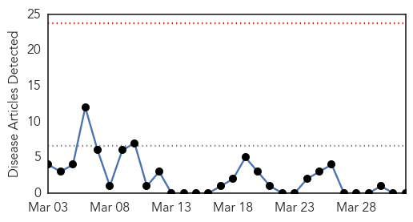
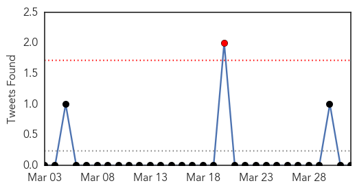

MERS
30-Day Web Trend
0 alerts, 0 warnings

30-Day Twitter Trend
1 alerts, 0 warnings

Article Locations

Article Confidences

Top Articles:
-
No articles found for Apr 01, 2015
Top Tweets:
-
No tweets found for Apr 01, 2015
Measles
30-Day Web Trend
0 alerts, 0 warnings

30-Day Twitter Trend
4 alerts, 0 warnings

Article Locations

Article Confidences

Top Articles:
- 0.890
- UNICEF Denies North Korean Measles Outbreak
- 0.880
- UNICEF Denies North Korean Measles Outbreak
- 0.841
- Dana Hills High School
- 0.804
- 5 Crucial Lessons From The Recent Measles Outbreak
- 0.680
- Brunei recognised, lauded for measles eradication: WHO
- 0.655
- UNICEF Denies North Korean Measles Outbreak
- 0.635
- Measles vaccinations jump after scare, public dialogue
Top Tweets:
-
No tweets found for Apr 01, 2015